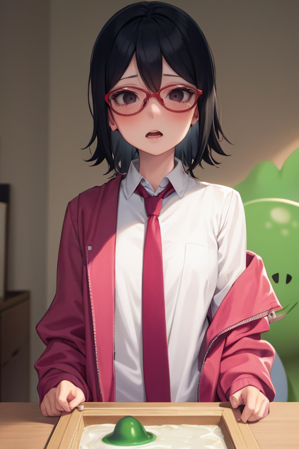

Basic Content Bootstrap 5
Image & Figure
Responsive Image
membuat gambar responsive, lebar akan selalu 100% dan tingginya akan menyesuaikan Responsive
Image Thumbnail
membuat Thumbnail

Gambar Tumpul
mensejajarkan gambar

Gambar Circle
Gambar lingkaran/ Bulat
Align Image
mensejajarkan gambar

Figure
membuat figure